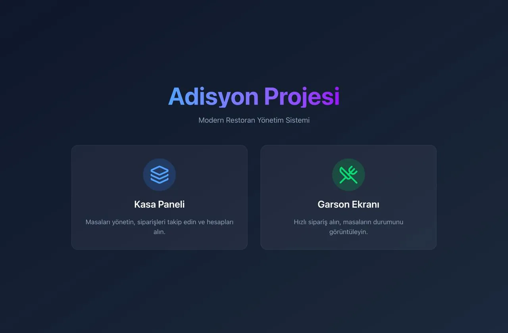
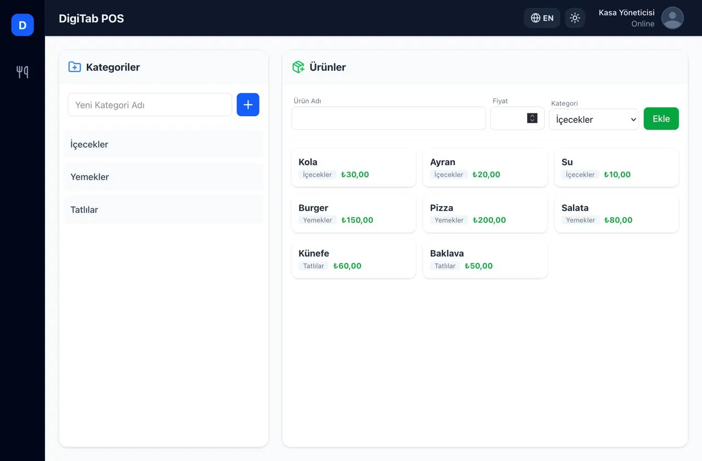
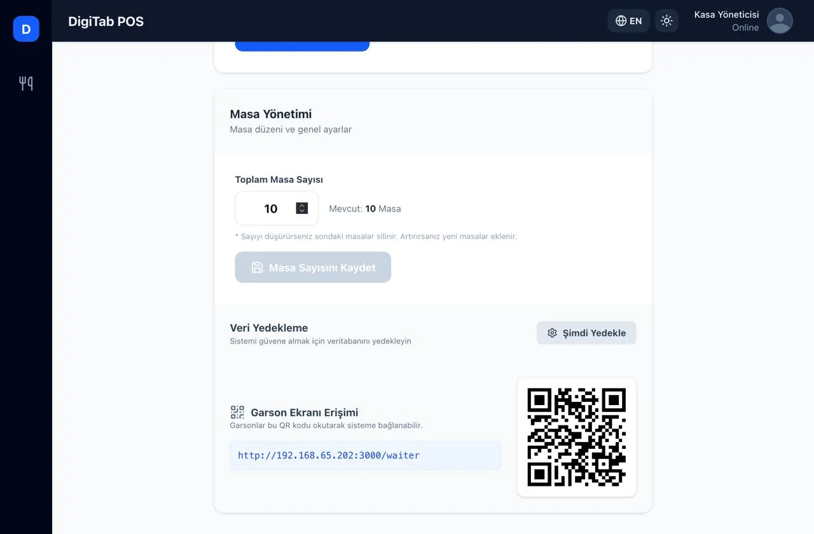
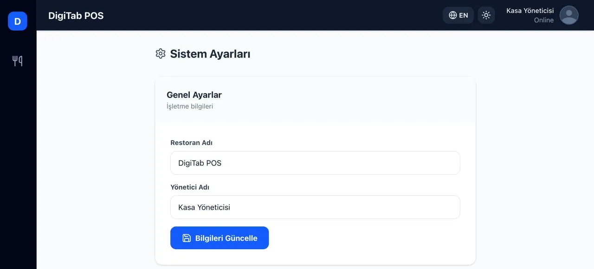
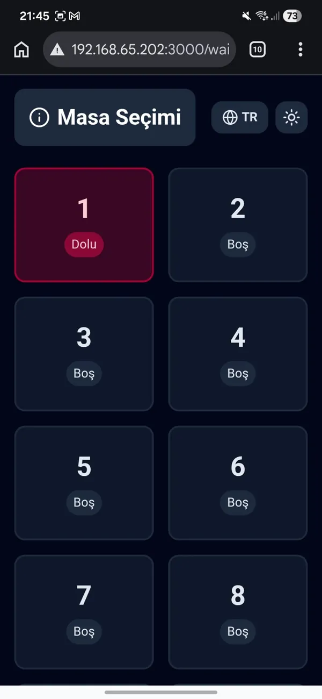
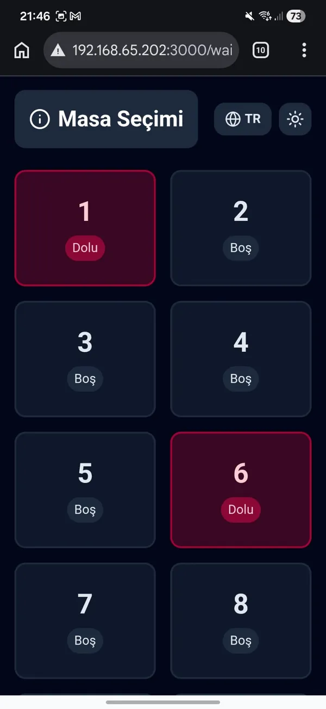
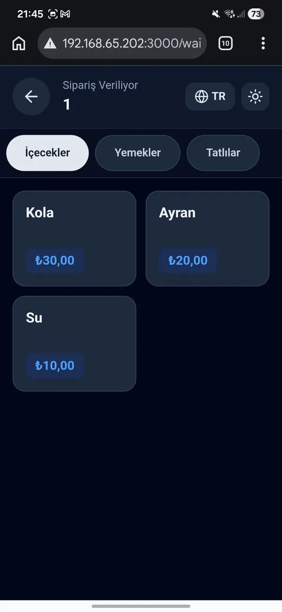
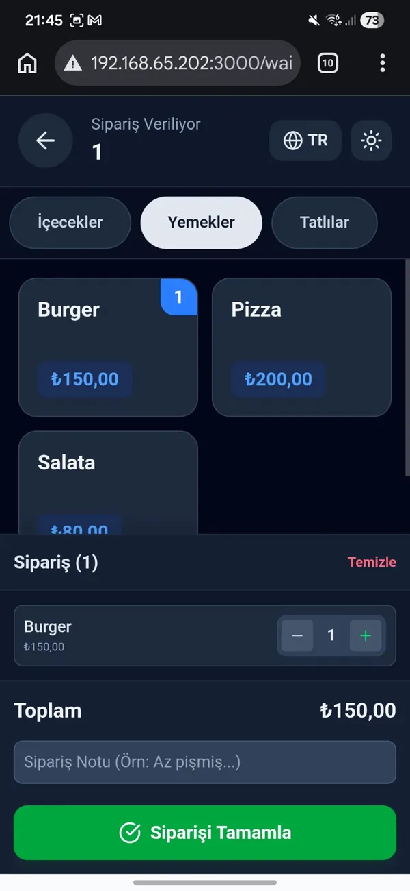

ProjeProject 07 · 2024
DigiTab Adisyon SistemiDigiTab Order Management
Restoran ve kafeler için gerçek zamanlı sipariş, masa ve menü yönetim sistemi.
A real-time order, table and menu management system for restaurants and cafés.
07.1ÖzetSummary
Kâğıt adisyonla çalışan bir işletmede sipariş garsondan mutfağa, oradan kasaya elden ele taşınıyor; bu da gecikme ve hata demek. DigiTab bu akışı dijitalleştiriyor: garson siparişi telefondan alıyor, mutfak ve kasa aynı anda görüyor, hesap tek tıkla çıkıyor.
In a business running on paper tickets, an order travels by hand from waiter to kitchen to cashier, which means delays and mistakes. DigiTab digitises that flow: the waiter takes the order on a phone, the kitchen and cashier see it at the same moment, and the bill is one click away.
07.2MimariArchitecture
07.3ÖzelliklerFeatures
| Masa yönetimiTables | Masaların doluluk durumunu ve sipariş sürelerini anlık izlemeLive table occupancy and order durations |
|---|---|
| SiparişOrders | Mobil/tablet üzerinden hızlı sipariş ve mutfağa anında iletimFast ordering from phone/tablet with instant delivery to the kitchen |
| MenüMenu | Ürün kategorileri, fiyatlandırma ve stokProduct categories, pricing and stock |
| AdisyonBilling | Tek tıkla hesap dökümüOne-click bill |
| RaporlamaReports | Günlük ciro ve en çok satan ürünlerDaily revenue and best-selling items |
| Garson girişiWaiter access | Yerel ağ adresi ve QR kod ile garson ekranına bağlanmaJoin the waiter screen via local network address and QR code |
| DilLanguage | TR / EN arayüzTR / EN interface |
07.4EkranlarScreens
Kasa / yönetim (tablet)Cashier / admin (tablet)









Garson (mobil)Waiter (mobile)







